CUERPO TECNICO
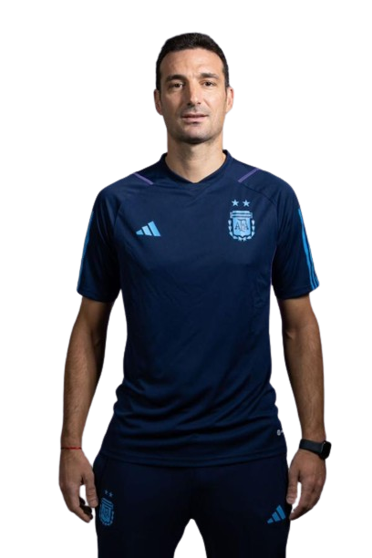
Lionel Scaloni
Director Técnico
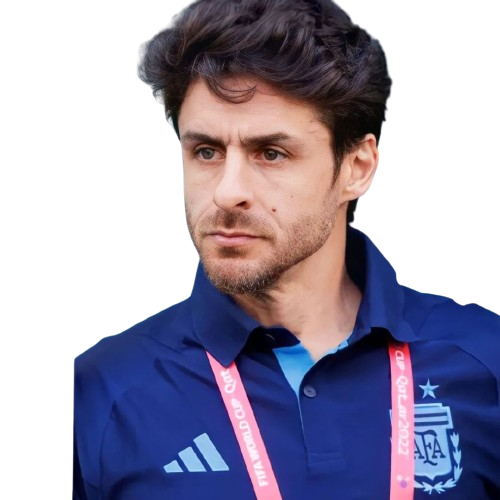
Pablo Aimar
Ayudante de campo
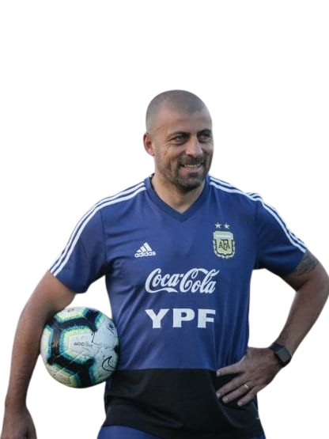
Walter Samuel
Ayudante de Campo
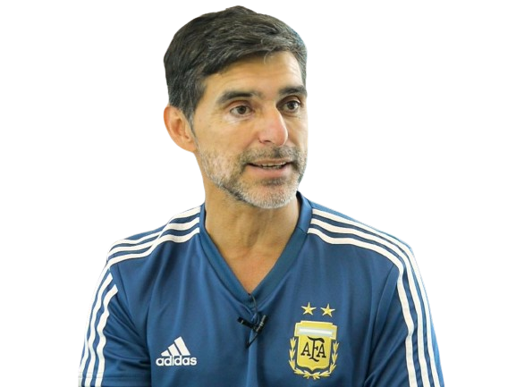
Roberto Ayala
Ayudante de Campo
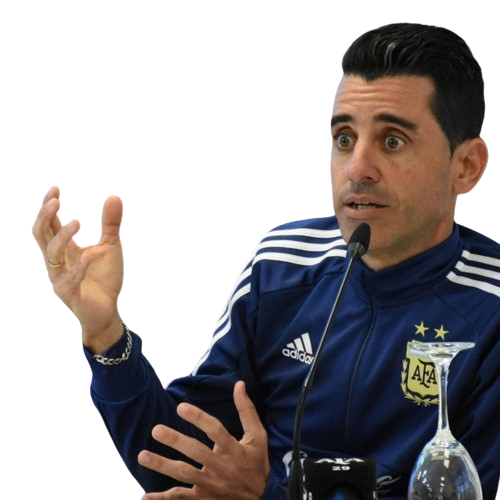
Martin Tocalli
Entrenador de arqueros

Matias Manna
Videoanalista
ARQUEROS
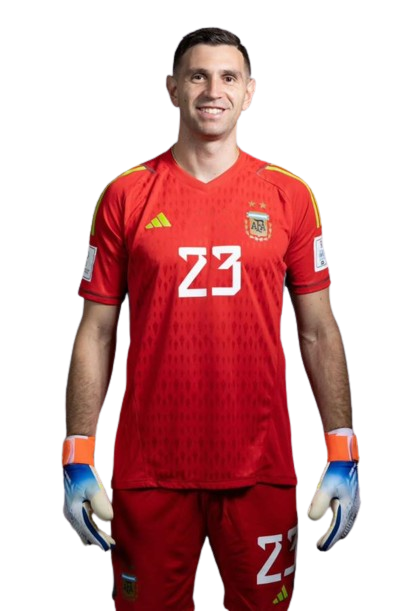
Emiliano Martinez
#23
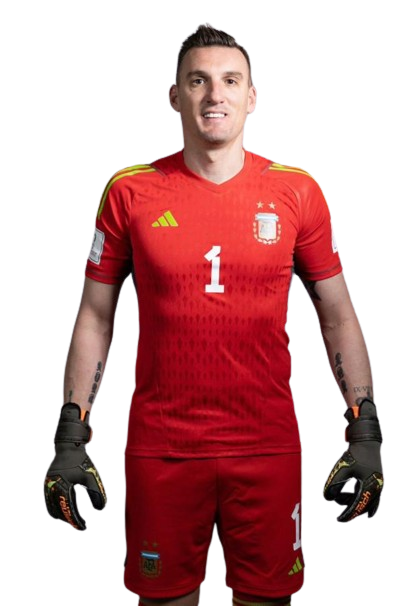
Franco Armani
#1
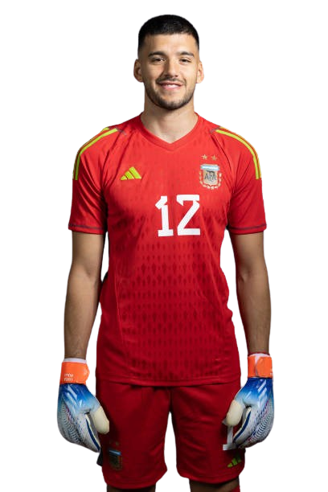
Geronimo Rulli
#12
DEFENSORES
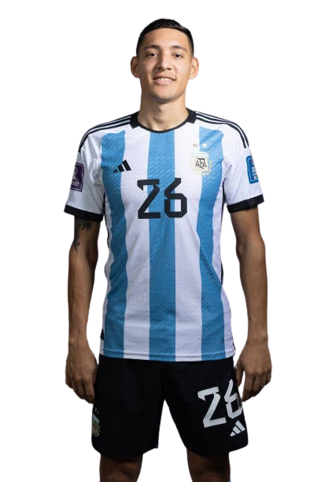
Nahuel Molina
#26
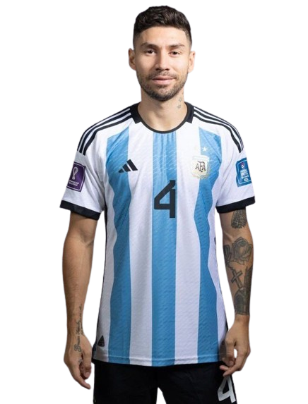
Gonzalo Montiel
#4
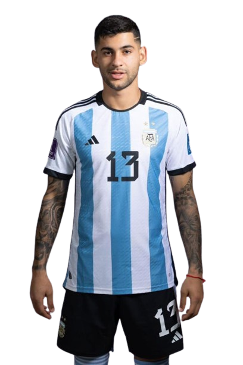
Cristian Romero
#13
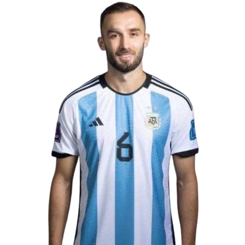
German Pezzella
#6
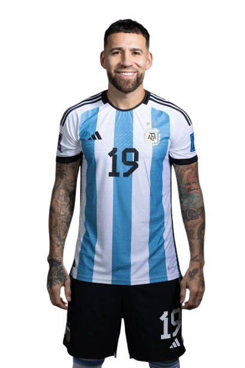
Nicolas Otamendi
#19
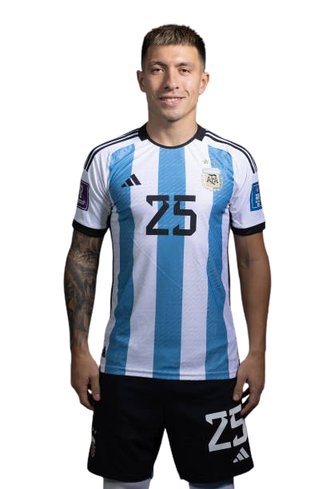
Lisandro Martinez
#25
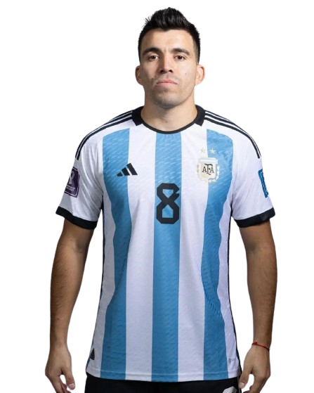
Marcos Acuña
#8
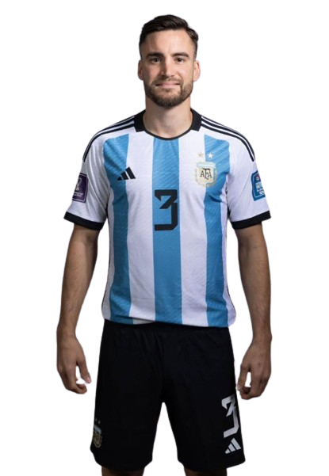
Nicolas Tagliafico
#3
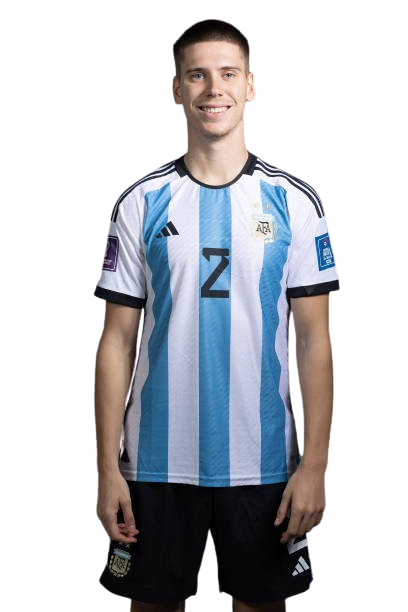
Juan Foyth
#2
MEDIOCAMPISTAS
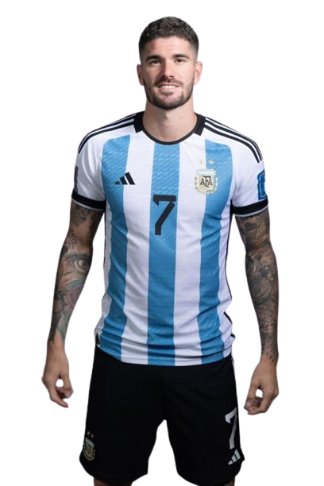
Rodrigo De Paul
#7
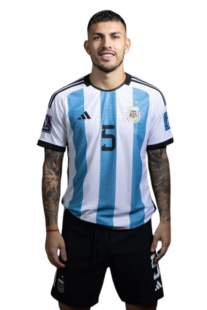
Leandro Paredes
#5
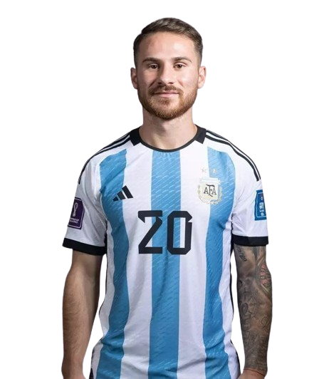
Alexis Mac Allister
#20
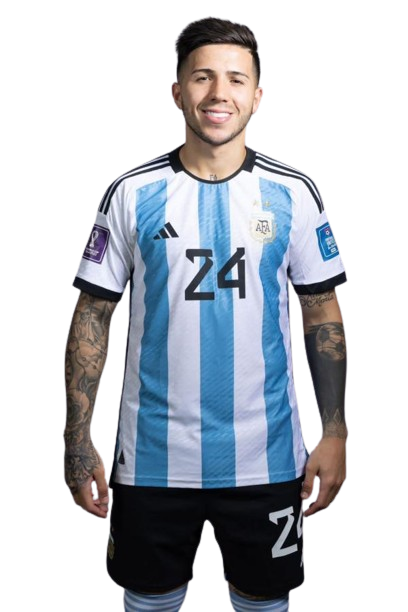
Enzo Fernandez
#24

Guido Rodriguez
#18
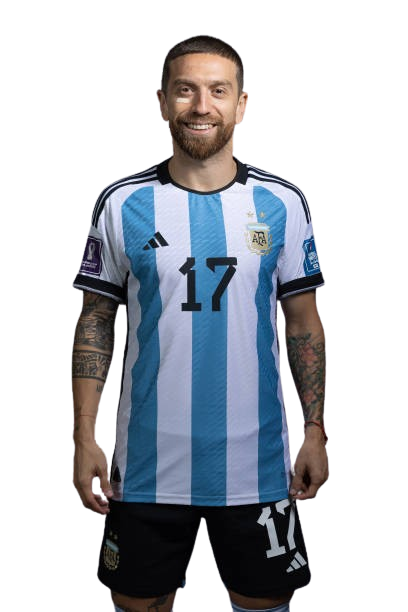
Alejandro Gomez
#17
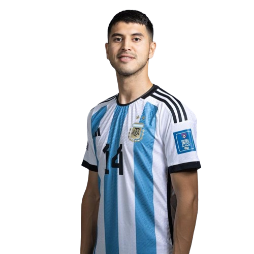
Exequiel Palacios
#14
DELANTEROS
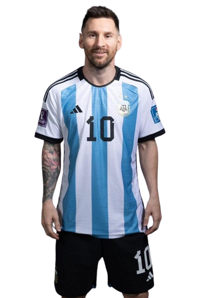
Lionel Messi
#10
Angel Correa
#15
Lautaro Martinez
#22
Angel Di Maria
#11

Paulo Dybala
#21
Julian Alvarez
#9
Thiago Almada
#16